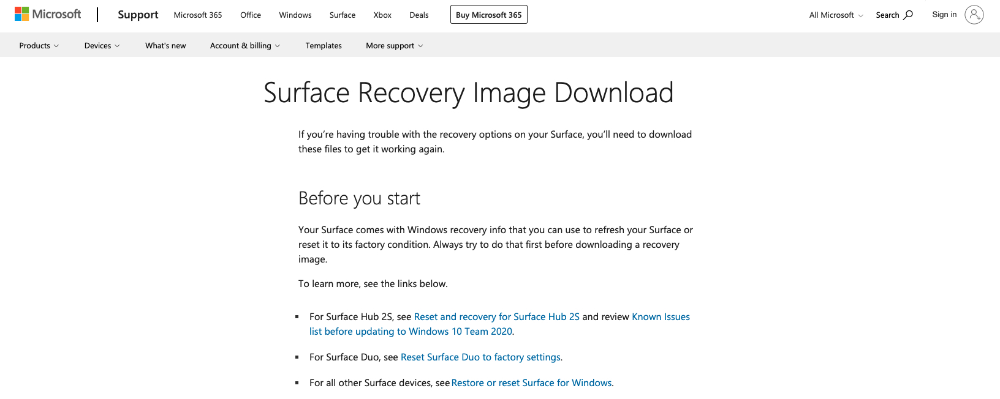

微软 Surface 设备恢复终极教程
据许多微软 Surface 用户反馈，Surface 的操作系统很容易崩溃。那么要如何解决这个问题呢？本教程将教授你3种方法。
警告:
1. 本文中的内容仅供参考. 涉及到核心技术的内容, 请以微软官方文档为准。
2. 在阅读本文中的任一方法时，请按照步骤阅读，切莫断章取义。
3. 在操作过程中，请勿在系统恢复过程中拔掉 USB 闪存盘、切断交流电或 强制关机。
此外，再三确认你已经把设备上重要的文件存储到了安全的位置。
4. 如果你忘记了你的 Bitlocker 密钥, 无论你的设备当前是否能够正常启动，都不要阅读这篇文章。
5. 若要查看微软官方文档, 访问 还原或重置 Surface for Windows，并同时停止阅读当前文章的任何内容。
方法一
使用 Windows 内置的系统重置功能
警告:
确保 你的设备当前运行的非 Windows 10 Version 1803.
若要辨别你当前的 Windows 版本, 同时按下 Windows 键 和 R 键然后在文本框中输入Winver。 点击 确认 按钮 或者按下 Enter 键.
图片的标记区域即为当前的系统版本。
对于Version 1803的用户, 请参考本文下方的 方法二或者方法三。

Windows 10 用户


Windows 11用户
个人文件包含什么？
警告:


个人文件包括 桌面文件夹 文档文件夹 下载文件夹 音乐文件夹 图片文件夹 和视频文件夹

如果系统提示你插入一个 Windows 安装介质, 那么你就应该选择 在线下载 选项，或者参照本文下方的 方法三，使用恢复映像来恢复设备。


使用公版 Windows 映像文件以快速恢复设备 在某些版本的 Windows 10 上使用系统内置的恢复功能后，会出现系统损坏的问题。 确保你的设备已经接入了互联网。
如果你无法将其打开，同时按下 Ctrl 键 Alt 键和Del 键然后 点击任务管理器。 选择下载64-bit。 选择保留一切内容的选项。
此方法对 Windows 10和Windows 11都有效。

在任务管理器窗口中，点击文件选项然后点击 创建新任务。
在文本框中输入explorer然后点击确认按钮或按下Enter 键。


你的设备将重启几次。
使用 Surface 恢复映像
要求：
1. 确保你的其它设备连接到了互联网，且它运行 Windows 10 或以上版本的系统。
2. 确保你有一个容量至少为 16GB 的 USB 3.0 U盘。(也可以不，具体取决于你下载的映像文件的大小。比如，有些映像占据的空间不到 8GB，有些则超过 16GB。)

选择你想用作为恢复驱动器的设备然后点击下一步。
等待制作完成。


如果提示存在相同命名的文件，点击替换即可。
将你的 Surface 关机并插入恢复驱动器然后同时按住电源键和音量加键直到其进入 Surface UEFI。

- 在 Surface UEFI 中, 选择 Boot configuration 然后拖拽 USB Storage 到第一位次。
-
点击左侧的 Exit 选项，然后点击Restart Now按钮。

-
你的设备将自动引导进入恢复驱动器。
选择语言和键盘布局。


语言选择列表中有多少种可用的语言取决于你购买设备的地区。
-
选择 Troubleshoot（疑难解答）选项。

-
然后选择 Recover from a drive（从驱动器恢复）。

如果你没有看到该选项，下方有一些可能的原因和解决方案：
1. 制作的恢复驱动器有问题，参照上方有关制作恢复驱动器的内容重新制作一次。
2. 某些 U盘 由于无法被 Surface 设备识别而无法用作恢复驱动器，即便它们是 USB 3.0 协议的。更换一个 U盘 再尝试启动。
我推荐使用 金士顿 DataTraveler 100 G3.
3. 网上的某些教程中会略过 |创建一个恢复启动器| 然后直接将 U盘 格式化为 FAT32 格式并将恢复文件复制到其中。这种做法偶尔也会起作用，但是很多人在尝试后发现无法启动。 -
如果你在设备上启用了 BitLocker，你将看到与下图类似的界面。你需要输入恢复密钥以完成后续的恢复步骤。

通常来说，它已经被存储到了你的微软账户中。你只需将屏幕上给出的链接打开，然后取回密钥即可。
-
有两种可用选项：仅删除我的文件和完全清理驱动器。 仅删除我的文件选项的恢复速度更快，但不会完全将磁盘抹掉。 如果在恢复后不再保留该设备，则选择完全清理驱动器，这样就不会被他人恢复硬盘上的文件。

-
在恢复开始前，再次确保你已保存所有的重要文件，恢复过程不可逆。当你准备就绪时，点击恢复按钮。

-
设备恢复时的状态看起来像这样：

- 在恢复过程中，将询问是否清除 TPM 设置。通常情况下，你可以选择清除。
- 在进入开箱设置（OOBE）阶段之前，你的设备将重启几次。
警告：
如果你曾设置过 UEFI 密码，将其键入密码框以获得完整的 Surface UEFI 控制权。
如果你已经忘记了密码，且设备已经无法正常进入系统，联系微软客服寻求帮助。
如果你忘记密码，但是足够幸运曾设置 USB 启动到第一启动顺序，则可以直接跳过下述与 UEFI 设置有关的内容。

确保像图中一样的 Enable Boot Configuration Lock 选项已被禁用。
敬请期待：方法四和常见问答集合帖